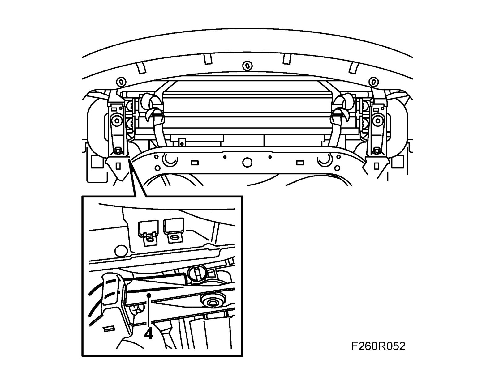
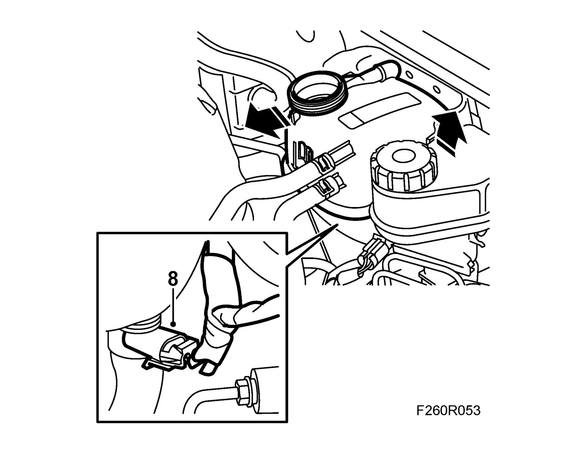
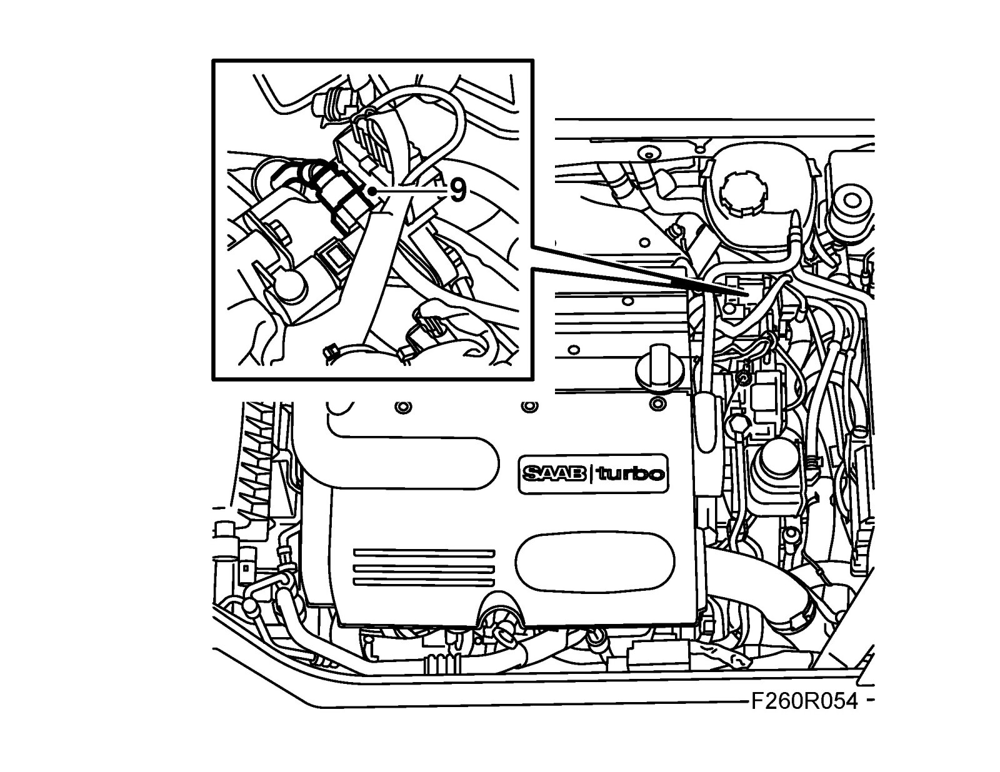
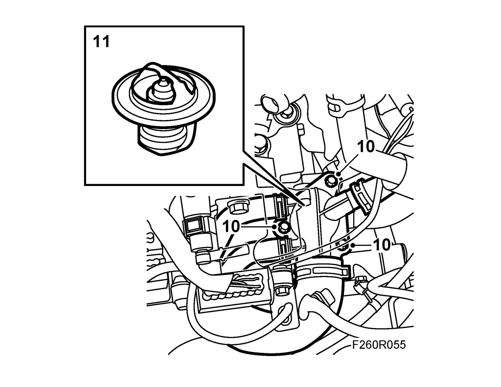
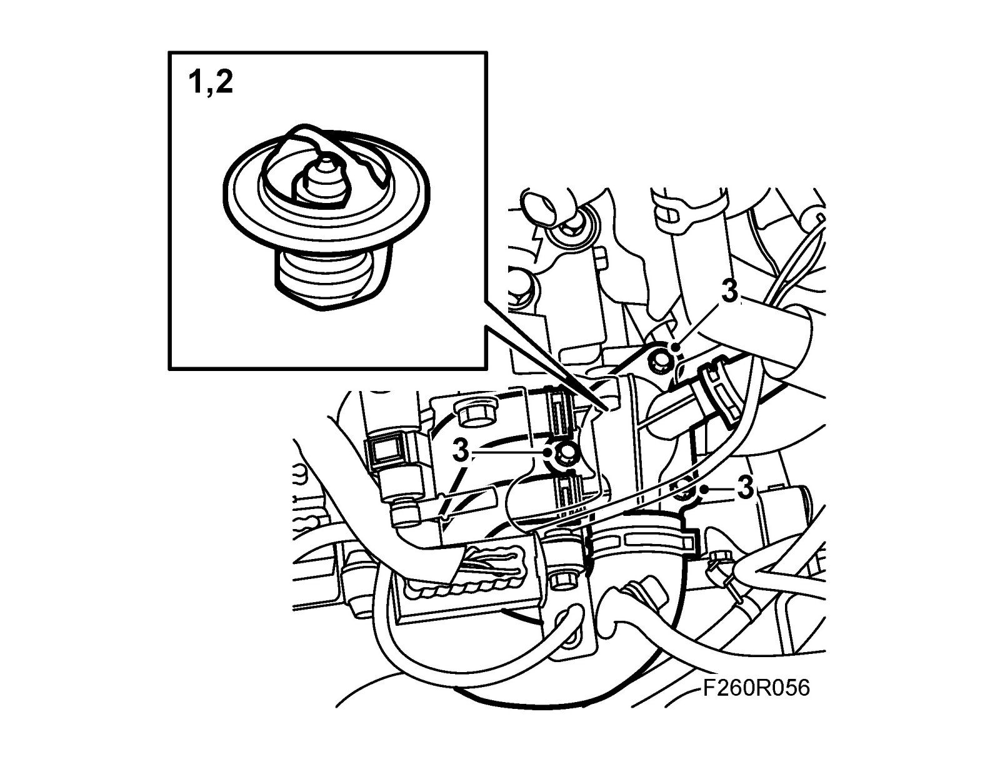
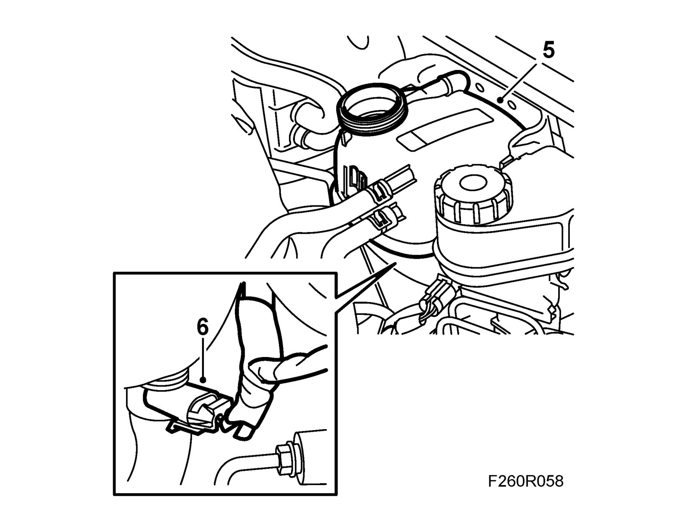

Thermostat: Service and Repair
ThermostatTo remove
Warning
The cooling system is under pressure. Hot coolant and steam can escape.
- Open the cap slowly to release the pressure.
- Carelessness can cause eye and burn injuries
1. Remove the expansion tank cap.
2. Raise the car.
3. Remove the front spoiler shield.
4. Take a receptacle, open the drain cock and drain the cooling system.

5. Close the drain cock.
6. Fit the front spoiler shield.
7. Lower the car.
8. Detach the level sensor connector and the expansion tank from the mounting on the body and move aside.

9. Detach the vacuum hose from the vacuum pump.

10. Remove the cover on the thermostat housing and move aside.

11. Remove the thermostat.
To fit
1. Clean the sealing surfaces.

2. Lubricate the new thermostat seal sparingly with Vaseline, non-acidic and fit the thermostat to the thermostat housing.
3. Refit the thermostat cover and fit the screws.
Tightening torque 10 Nm (7 lbf ft)
4. Connect the vacuum hose to the vacuum pump.
5. Put in place the expansion tank and fit it to the body.
6. Plug in the level sensor connector.

7. Fill with coolant to approx. 20 mm above the mark on the expansion tank.